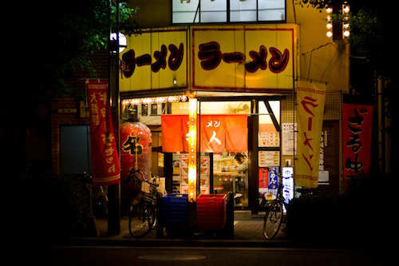
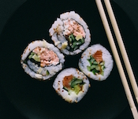
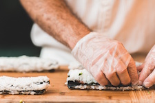
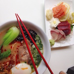
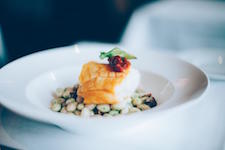
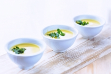

sapporo
Cuisine
- #traditionnelle
- #japonaise
- #noodle
- #curry
- #ramen

Le Sapporo propose à ses clients de délicieux plats typiques japonais. Suchis, ramen, grillades, donburi, curry japonais, yakisoba, okonomiyaki, chahan, hayashi rice, kamameshi, mugi gohan, ochazuke, takikomi gohan...
Le tout agrémenté de plusieurs sortes de riz (hakumai, genmai) et de nouilles (udon, soba, somen).
Plan d'accès
33 rue Saint Rémi
33000 Bordeaux
Photos

délicieux makis 
préparation de maki sur place
utilisation de produits frais- boissons traditionnelles

nourriture de qualité et esthétisque
produits sains
Horaires
| Ouverture | Semaine | Week-end |
| Midi |
de 11h45 à 14h30 |
de 11h45 à 15h00 |
| Soir |
de 18h45 à 22h30 |
de 18h45 à 1h |
| À emporter |
de 11h30 à 23h |
de 11h30 à 2h |